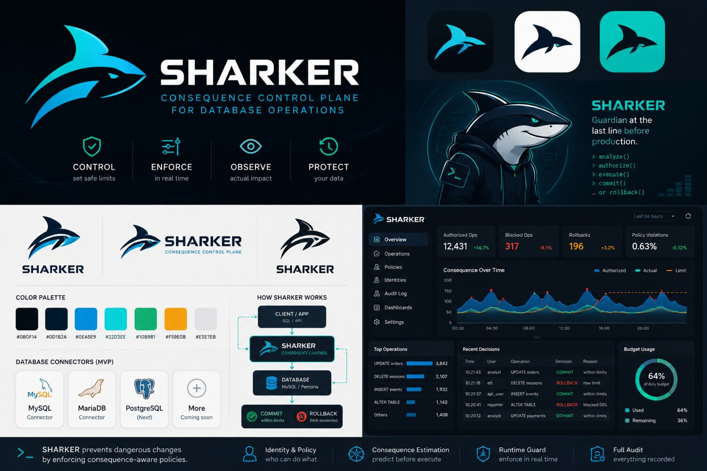

Runtime consequence control for production databases
The last line before production.
SHARKER analyzes database operations, authorizes a measurable consequence envelope, observes actual impact, and commits or rolls back before damage becomes permanent.
Part of the database ecosystem
Built for real database estates, not toy demos.
Initial MVP focus is MySQL / Percona. The broader architecture is database and platform agnostic.
MySQLPerconaMariaDBPostgreSQL
Oracle DatabaseMicrosoft SQL ServerSnowflakeDatabricks SQL
Distributed SQLDocument databasesKey-value systemsService-layer operations
How much consequence may it cause?
What SHARKER does
Control. Enforce. Observe. Protect.
Approval is bound to measurable runtime limits and verified against what actually happened.
Analyze
Inspect SQL or service-layer operations before they reach production data.
Authorize
Bind permission to rows, cost, scope, role, time, and policy.
Execute
Run under a controlled profile with bounded authority.
Measure
Compare actual runtime impact against the authorized envelope.
Commit or rollback
Persist only when the consequence stays within limits.
$ sharkerctl profile use analyst
> sql "DELETE FROM orders WHERE created_at < '2024-01-01'"
Estimated impact: 128,432 rows
Action: ROLLBACK · threshold 10,000 rows exceeded
> audit last 1
User: analyst · Decision: ROLLBACK · Impact: 128,432 rows
Why now
AI and automation need bounded authority, not blind trust.
Roles and grants are necessary, but they do not understand consequence. SHARKER adds the missing runtime guard for privileged users, scripts, and AI-driven database workflows.
Design partner program
Put SHARKER against a real workload.
We are looking for teams running production-critical database environments to validate observe-only pilots and shape enforcement.
Become a design partner